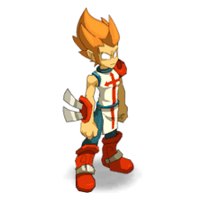
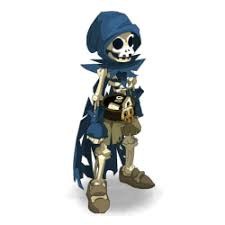
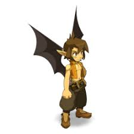
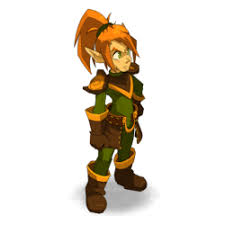

Pour aller plus vite cliquez sur le personnage qui vous interesses!!!
Voila la liste des personnages

Les Iops sont des guerriers fonceurs et sans reproche ! Une chose est sûre :
les Iops savent faire parler les armes.
D'ailleurs, se retrouver pris dans une bagarre au moins une fois par jour est pour eux un signe de bonne santé.
Leur tempérament impétueux fait des Iops des paladins de l'extrême, capables du meilleur... comme du pire !

Les Srams sont des assassins qui aiment les bourses, rebondies de préférence.
Trousser les pans d'une tunique, tâter le fond d'une poche, faire preuve de doigté, palper enfin des bijoux tant convoités avant de poser un piège ou d'asséner un coup mortel.
Voilà la vie d'un disciple de Sram !

Les Eniripsas sont des guérisseurs qui soignent d'un simple mot.
Ils utilisent le pouvoir de la parole pour soulager les souffrances de leurs alliés, mais parfois aussi pour blesser leurs ennemis.
Certains Eniripsas sont même devenus de véritables arpenteurs du verbe, des rôdeurs des langues oubliées.

Les Crâs sont des archers aussi fiers que précis ! Ils font des alliés précieux contre les adeptes de la mêlée franche.
Restant à distance, décochant leurs traits empennés dans le moindre orifice laissé sans surveillance, ils ne laissent aucun répit à leurs adversaires !